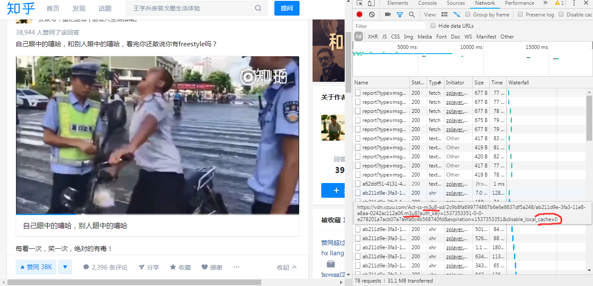
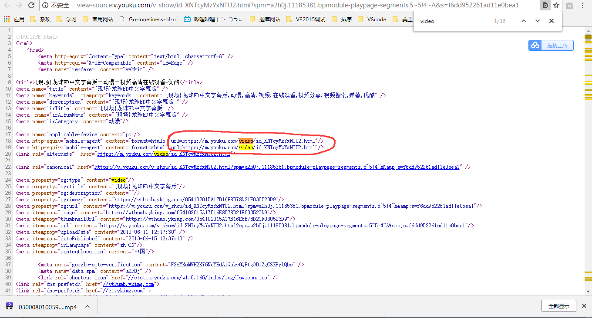

前几天想在电脑本地看看知乎、bilibili 等网站的视频，但发现网站本身并没有提供下载方法，便百度学习了下，发现针对不同网站的扒取方法也不同，今天就花 点时间将各种方法汇总在此处。
m3u8 是种传输视频的方法，很多网站将视频分割成很多份来进行传输，而 m3u8 包含了所有这些片段的地址，所以浏览器会先收到 m3u8 文件，然后根据 m3u8 文件上记载的 url 依次下载这些视频片段进行播放，所以如果打开控制台（F12）你就能看到很多 .mp4 之类的文件，点击就能下载。
那么问题来了，每个视频都分这么多片段，难道每个视频都要一个个下载然后一个个存放么？
当然不是，实际上早已经有大佬开源了自动下载并自动拼接这些视频片段的软件，咱们只要使用就好了，下面说如何下载安装使用这个软件。
软件名称是 ffmpeg，FFmpeg 分 3 个版本：Static、 Shared、 Dev，前两个版本可以直接在命令行中使用。包含三个exe：
ffmpeg.exe，ffplay.exe，ffprobe.exe
Static 版本中的 exe 体积较大，因为其相关的 dll 都已经编译进 exe 里面。
Shared 版本中 exe 的体积相对小很多，因为它运行的时候还需要到相关 dll 中调用相应的功能，Dev 版本用于开发，里面包含了库文件 xxx.lib 以及头
文件 xxx.h，我下载使用的当然是 Static 版本了，已经存到自己百度云上了，这是分享链接：
点击下载
下载后的安装方法并不像普通 Windows 软件那样，因为 ffmpeg 是个命令行工具，所以要先把它的 exe 文件添加到系统的 Path 环境变量中才能在任意路径
下使用，具体做法如下：
这时候应该已经可以在 cmd 中运行 ffmpeg 了，在 cmd 中输入：ffmpeg –version 命令就会出现当前 ffmpeg 的版本信息，这证明已经正确安装，可
以正常使用了，如果不能，注意检查自己是不是安装过程哪里错了。
接下来就是使用它下载视频了，方法很简单：找到 m3u8 文件的地址，然后在 cmd 中输入以下命令：
ffmpeg -i "m3u8 文件的地址" -c copy 视频名.mp4
这样就可以下载视频了，如下图所示：所以最后的问题就是如何找到 m3u8 文件的地址了，分三步，第一步是按 F12 打开控制台，然后切换到“Network”一栏下。第二步点击视频开始播放，这时
你会看到控制台中列出了浏览器收到的文件。第三步就是找出 m3u8 文件了，首先点击“type”，浏览器会根据文件类型进行排序，这样容易找些，然后移动鼠标到
文件上会出现其相应的 url，m3u8 文件的地址中当然有 m3u8 字样，其次 m3u8 文件的地址的末尾有 cache=0 这一字样，最重要的是由于浏览器是根据
m3u8 文件来下载视屏的，所以根据 type 排序后 m3u8 文件一般会出现在 report 后或 batch 后。针对这三个特点很容易就能找出 m3u8 文件。
找到后，右键复制地址，有些浏览器是英文的，右键选择 copy link address 就可以了。

只要是使用 m3u8 的网站，用这个方法都可以扒它们的视频，包括很多 ...... 不可描述的网站，哈哈自行体会。
bilibili 作为一个专门的视频网站，反扒措施当然是做的比较牛逼了，像我等菜鸡是不可能凭借自己的本事扒下来的，不过自己不行不代表别人不行，像
ffmpeg 一样，也已经有大佬搞定了 B 站，并且这些人还专门建立了一个网站为小白提供 B 站视频的免费下载服务，网站地址是：
https://www.jijidown.com/
进去访问你就都知道了，网站上还能下载 PC 端软件，下载了它就可以直接用图形界面的软件下载 B 站视频了，简直不要太方便。感谢大佬们！
视频网站们当然有各种反扒措施，收费视频的扒取方法非常麻烦我看着都头晕所以这里就不说了，不过免费视频的倒是很简单，就在这里说下，拿优酷举例，首先随
便打开个优酷视频，右键查看网页源代码，看到代码不要怂，查找（ctrl + F）字符：video，如下图：

如图，访问上面两个标签任意一个的 url 属性后的链接，出现下图画面
暂时就这么些了，以后有新方法再来更新。